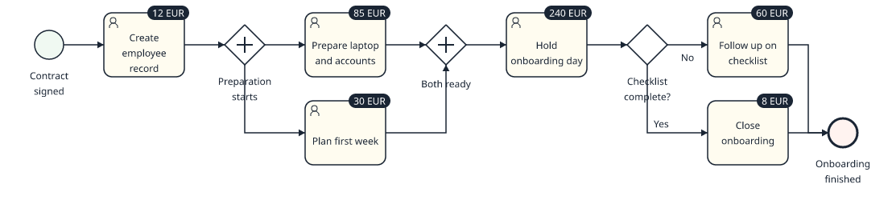

Features
What ProcessCraft does
Three areas: drawing, exchanging BPMN files, and analysing a process once it is drawn. The status page says what has been verified and what has not.
Modeling
The canvas follows the interaction model of bpmn-js, re-implemented natively. BPMN rules decide what can connect to what and which kind of connection is created, so the diagram stays valid while you sketch; an operation that would break the model is refused with a reason.
Canvas
A context pad beside the selection appends the next task, gateway, event or annotation. Drag or click to connect, with green or red feedback while you hover. New elements are placed and routed for you. Pan, zoom and box-select work as in other canvas tools.
Editing
R changes the type of a task, event, gateway, sub-process or data element. E renames it inline. Snapping guides and a 10 px grid help placement; bendpoints and segments can be dragged, and flow ends can be reconnected. Copy, cut, paste and duplicate create fresh IDs, align and distribute work on selections, and Ctrl+F searches the canvas.
Structure
Boundary events follow their activity and attach by dropping on its border. Dropping an element on a flow inserts it. Pools, lanes and sub-processes grow with their content; lanes can be added, split, resized and deleted; the space tool (S) opens room in a diagram. Every edit, including auto-layout of a whole diagram with a preview, is one undo step.


1, T, X) add elements.BPMN interchange
ProcessCraft reads and writes BPMN 2.0 XML with diagram interchange (DI) and exports SVG, PNG, PDF and draw.io. The rule that governs it: content outside the supported profile is kept byte for byte or refused with a reason. It is never dropped quietly or reinterpreted.
| Import mode | What it means |
|---|---|
| Editable | The model fits the supported profile and is fully editable. |
| Editable with retained extensions | Vendor extensions are kept verbatim. Vendor attributes such as camunda:assignee do not restrict modeling, but an element they reference by ID cannot be deleted, and vendor elements that ProcessCraft does not model block structural edits that could invalidate them. |
| Preserved source | The original XML is kept byte for byte and exported unchanged. The import report names what prevented editing. |

Custom attributes in BPMN: pc:attributes
Custom attribute values are written into the element's extensionElements in the namespace urn:processcraft:attributes:1, and read back on import. Foreign extensions next to them are preserved. Limits, as checked in the command-line workflow: a dictionary reference value does not survive the trip, because dictionary entries exist only in the native file, and the exporter asks you to acknowledge that omission. Whether other BPMN tools keep pc:attributes when they save the file has not been tested.
What this is not
This is a broad, tested profile, not a claim of complete BPMN 2.0.2 coverage or of OMG conformance. Parsing is bounded, rejects DTDs and external entities, and never loads remote resources. Coverage is tracked element by element in the coverage notes.
Analyst layer
Added in 0.2.0. The images below are drawn by ProcessCraft's renderer from a project built with the command-line tool, so they show what an export looks like. On the desktop the same overlay is available on the canvas; that part has not been checked by hand yet (see Status).
Custom attributes
A project defines typed attributes: text, number, duration, currency, enum, date, dictionary reference or URL. Each definition says which element kinds it applies to and whether it is required. Values are edited in the inspector and as columns of the activity table. Starter definitions are Duration, Cost, SLA, Risk, Control and Process owner; nothing is created unless you ask for it.
Modeling conventions
A conventions profile stored in the project turns house rules into findings in the problems panel, each with a severity you choose. The rules are:
- label required (by element kind)
- activity label as verb plus object (a configurable English word list, so it misses some verbs)
- labelled gateway outgoing flows
- no implicit split or join
- one start and one end per process level
- maximum number of elements per diagram
- required attributes
- dictionary terms instead of free text
The same findings come out of the CLI and MCP; see validate.
RACI matrix
A view derived from the lanes and the dictionary roles, with Responsible, Accountable, Consulted and Informed assignments stored as attributes. It exports to CSV. This is the matrix of the procurement fixture, as query raci returns it:
| Activity | Finance manager | Procurement | Requester | Legal |
|---|---|---|---|---|
| Review request | C | A | R | I |
| Place order | I | R, A | C |
Heatmap and badges
Colour activities by a numeric or enum attribute in five steps, or show the value as a badge on each activity. The heatmap adds a legend. The overlay is on screen only by default and is an option when you export an image or a PDF.


Library, dictionary, table and checkpoints
- Model library with folders and search.
- Dictionary of roles, systems and documents, linked to elements, with a list of where each entry is used.
- Activity table: an editable table of every activity with its role, systems, documents and attributes.
- Problems panel and comments on elements.
- Checkpoints: named revisions you can compare with the current model and restore.